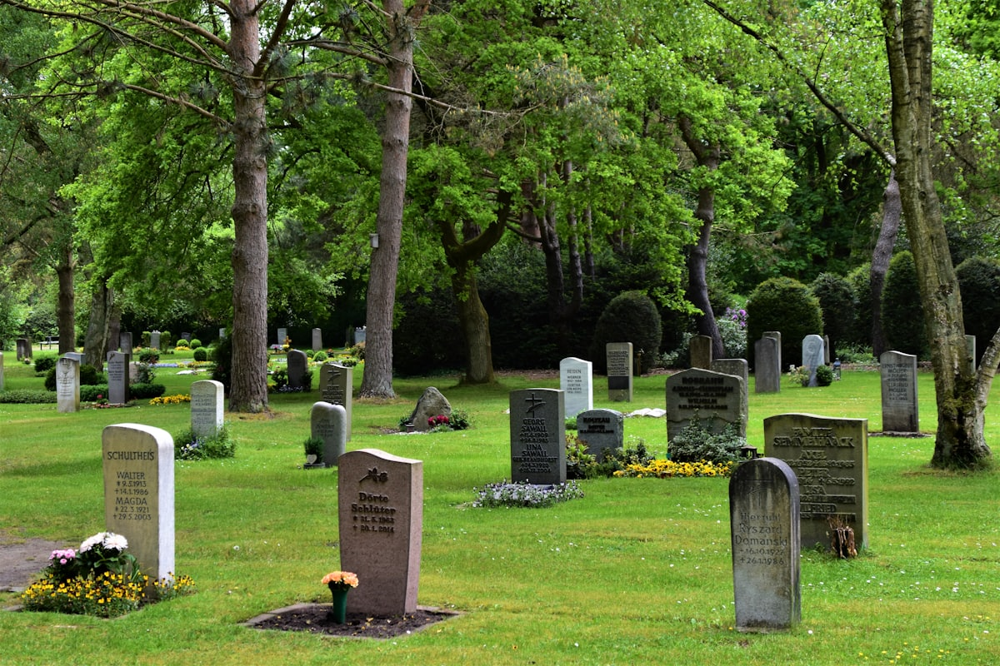
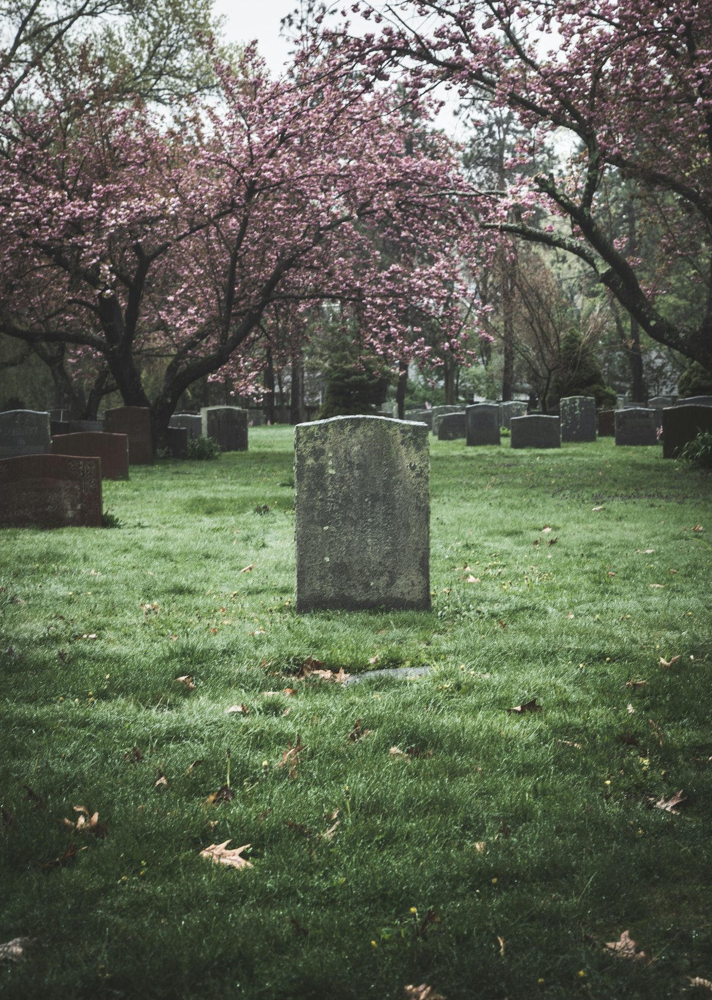
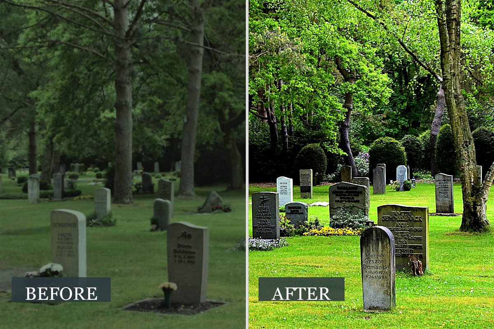

Years of
Care

Sensitive, professional cleaning and restoration of headstones, kerbs and family graves across the Wirral, Liverpool and Chester. We treat every memorial with the dignity it deserves.

Time, weather and lichen slowly take their toll on every memorial. At Hallowed Ground, we restore headstones and family graves with the same care and respect we'd give our own.
We're a small, family-run team based in the North West. Whether a memorial has been neglected for decades or simply needs an annual tidy, we work quietly, sensitively and to the highest standard — using stone-safe methods that protect the inscription and finish for years to come.
From a gentle annual clean to full restoration of a weathered memorial — every service is delivered with care, patience and respect for the family it honours.
A gentle, thorough clean using methods chosen specifically for the stone type — granite, marble, limestone, sandstone or slate.
Careful removal of biological growth — lichen, moss, algae and ivy — that obscures inscriptions and damages the stone over time.
Faded, weathered or filled inscriptions repainted by hand. Traditional gold leaf gilding available for a lasting, prestigious finish.
Re-setting leaning or fallen headstones, kerb realignment, repair of chips, cracks and broken sections by experienced stonemasons.
Fresh seasonal flowers, traditional silk arrangements or wreaths placed on the grave on your behalf — for anniversaries or whenever you wish.
Regular visits throughout the year to keep the grave clean, tidy and well-tended — peace of mind whether you live nearby or far away.
Years of weather, lichen and dust gently lifted away — inscriptions brought back to clarity and the stone returned to the dignity it deserves.

From the first conversation to the final photograph, every step is handled with quiet professionalism.
Send us the cemetery and grave details. We'll talk through what you'd like — without pressure or obligation.
We visit the memorial, assess the stone and growth, then send a clear written quote with photographs.
Work is carried out by hand using stone-safe methods, always with respect for surrounding graves.
You receive before-and-after photographs by email — especially valuable for families who live far away.
We care for memorials throughout Merseyside and Cheshire — town and parish, large municipal cemeteries and quiet country churchyards.
Regular work at Landican Cemetery and parish churchyards across the Wirral Peninsula.
Serving Anfield, Allerton and Springwood cemeteries and the city's parish churchyards.
Including Blacon Cemetery and parish churchyards throughout Chester and the surrounding Cheshire villages.
Outside these areas? Please get in touch — we may still be able to help, or recommend a trusted colleague.
Mum's headstone hadn't been touched in twenty years and we'd almost given up. The before-and-after photographs brought us to tears — you can read every word again. Quiet, kind people who clearly take pride in what they do.
I live in Australia now and can't visit my father's grave. The quarterly photo reports mean the world. The team are gentle, professional and have made a difficult thing simple. Thank you.
The gold leaf re-lettering on my grandparents' stone is beautiful — truer than it looked even when first installed. Patient, sensitive and exceptional craftsmanship throughout.
Tell us a little about the memorial and what you'd like to discuss. We'll get back to you within one working day.
Every enquiry is read personally and answered with care. We don't share your details with anyone.
Site work weather-permitting. Voicemails returned the same day.
Please share as much as you're comfortable with — the more we know, the more helpful we can be.